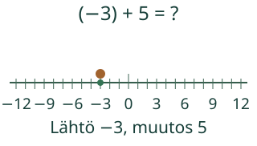
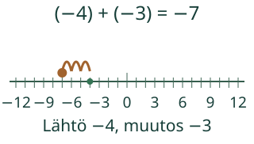
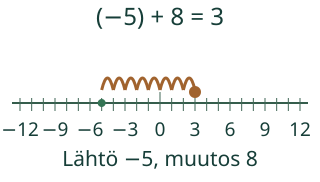

<link rel="stylesheet" href="lesson.css"><section class="b15" data-b15-add>
<section data-teaching-step="1" data-lesson-role="teaching-step">
<div class="intro"><p>Loikka seuraa lähtöluvun ja muutoksen yhteyttä.</p></div><p data-goal><strong>Lisään kokonaisluvun ja perustelen suunnan.</strong></p>
</section>

<section data-teaching-step="2" data-lesson-role="teaching-step">
<fieldset><legend>Lisäys voi viedä kumpaan suuntaan tahansa</legend><div data-view></div><p data-readout aria-live="polite">Kohta −3. 0/5 yksikköväliä oikealle. Yhteenlasku on sama toimenpide kummassakin suunnassa.</p><div class="actions" data-primary><button type="button" data-action="step">Seuraava vaihe</button><button type="button" data-action="play">Toista</button><button type="button" data-action="stop">Pysäytä</button><button type="button" data-action="model-reset">Mallin alkuun</button><button type="button" data-action="end">Näytä loppu</button></div><p data-running>Toisto pysäytetty.</p><details data-model-details data-lesson-role="teaching-step"><summary>Vaihda mallia / katso arvot</summary><label>Malli<select data-model><option value="cross">Nollan yli oikealle</option><option value="negative">Negatiivisen luvun lisääminen</option><option value="mixed">Nollan yli vasemmalle</option><option value="zero">Nollan lisääminen</option><option value="cancel">Vastaluvut kohtaavat nollassa</option><option value="positive">Kaksi positiivista lukua</option><option value="reverse">Vaihdetut yhteenlaskettavat</option><option value="transfer">Lämpötila nousee</option></select></label><div data-table><table><caption>Lähtö, muutos ja tulos</caption><tbody><tr><th>Lähtöluku</th><td>−3</td></tr><tr><th>Lisättävä luku</th><td>5</td></tr><tr><th>Summa</th><td>2</td></tr></tbody></table></div></details></fieldset>
</section>

<section data-teaching-step="3" data-lesson-role="teaching-step">
<p data-lesson-role="question"><strong>Pohdi ensin:</strong> Voiko yhteenlasku viedä lukusuoralla vasemmalle?</p>
</section>

<section data-teaching-step="4" data-lesson-role="teaching-step">
<details id="examples" data-lesson-role="worked-example"><summary>Kaksi esimerkkiä ja uusi tilanne</summary><h2>Toimenpide ja suunta ovat eri asioita</h2><p>Luvussa (−3)+5 lähtö on−3. Lisättävä5 on positiivinen: kolme väliä nollaan ja kaksi lisää antaa2. Merkki + tarkoittaa yhteenlaskua. Oikealle mennään juuri siksi, että lisättävä luku on positiivinen.</p><figure data-lesson-role="worked-example"><figcaption>Toinen esimerkki:(−4)+(−3)=−7. Sama yhteenlaskun toimenpide, mutta negatiivinen lisättävä vie vasemmalle. Tämä ei ole miinusluvun vähentämistä.</figcaption></figure><p><strong>Vältä ansa:</strong> kaksi miinusmerkkiä eivät aina tee plussaa. Tässä molemmat luvut ovat negatiivisia ja ne lasketaan yhteen: tulos on negatiivinen. Merkkien tehtävä ratkaisee.</p><p>Nollan lisääminen ei liikuta: (−5)+0=−5. Vastaluvut kumoavat toisensa: (−6)+6=0. Nollapari on kahden vastakkaisen luvun yhteisarvo, ei negatiivinen määrä esineitä.</p><figure data-lesson-role="worked-example"><figcaption>Siirto lämpötilaan:−5 °C ja nousu8astetta antaa3 °C. Lämpötila ja sen muutos eivät ole sama tieto.</figcaption></figure></details>
</section>

<section data-teaching-step="5" data-lesson-role="teaching-step">
<section><h2>Kokeile itse</h2><p>Voit vastata suoraan. Malli, selitykset ja apu ovat valinnaisia; puhetta tai kuuntelua ei tarvita.</p><label>Tehtävä<select data-task><option value="cross">Summa nollan yli oikealle</option><option value="negative">Kahden negatiivisen summa</option><option value="mixed">Positiivinen ja negatiivinen</option><option value="zero">Nollan lisääminen</option><option value="cancel">Vastaluvut summassa</option><option value="positive">Kahden positiivisen summa</option><option value="reverse">Yhteenlaskettavien vaihto</option><option value="transfer">Lämpötilan uusi arvo</option></select></label><p data-question>Laske (−3) + 5. Lähtö on −3 ja lisättävä luku on positiivinen 5.</p><label>Summa<input data-answer type="text" inputmode="text" autocomplete="off" maxlength="96"></label><button type="button" data-action="check">Tarkista</button><output data-feedback data-result="neutral" aria-live="polite">Tarkista, kun olet valmis.</output><details data-help data-lesson-role="hint"><summary>Tarvitsen apua</summary><p>Lähde ensimmäisestä luvusta. Katso lisättävää lukua: positiivinen vie oikealle, negatiivinen vasemmalle, nolla pitää paikallaan. Laske välejä. Merkki + kertoo yhteenlaskusta, ei yksin kulkusuunnasta.</p><p>Avun kanssa tehty vastaus on tuettua harjoittelua, ei itsenäisen hallinnan todistus.</p></details></section>
</section>

<section data-teaching-step="6" data-lesson-role="teaching-step">
<details data-lesson-role="teaching-step"><summary>Lisää tutkittavaa</summary><p>Kokeile vastalukuja (−6)+6. Kokeile myös mallia Vaihdetut yhteenlaskettavat. Voitko selittää, miksi summa säilyy vaikka reitti vaihtuu?</p></details>
</section>
<details data-lesson-role="teacher-note"><summary>Opettajalle ja paperille</summary><p>Luokat 7–9. Tavoite:Laskee kokonaislukujen summan ja yhdistää lähtöluvun, lisättävän luvun etumerkin, suunnan ja lopputuloksen.</p><p>Merkitse tasavälinen lukusuora paperille tai lattialle. Siirrä yhtä merkkiä lähtöluvusta lisättävän luvun osoittamaan suuntaan. Muuta vain yhtä lukua kerrallaan. Vertaa (−3)+5 ja5+(−3): sama summa, eri lähtö ja reitti.</p><p>Pakolliset esitiedot ovat M79-INT-01 ja M-ADD-01. Lukusuoran välejä tulkitaan samalla yksiköllä koko mallissa. Kanoninen rooli on atomic; emme lisää esitietoja tai kirjoita hallintatiloja.</p><p>Mallien luvut ja tulos ovat välillä−12…12; yksi hyppy on yksi yksikköväli. Symboli + ei yksin määrää suuntaa.</p><p>Desimaalin pilkku tai piste ja samanarvoinen murtoluku käyvät. Syötössä enintään96merkkiä, enintään18numeroa kokonaisosassa tai murtoluvun osoittajassa ja nimittäjässä, enintään9desimaalipaikkaa. Ei laskulausekkeita, eksponenttimuotoa tai pyöristystä.</p><p>Vaihetoisto on esitystapa, ei fyysisen tapahtuman mittaus tai aikaraja. Ei negatiivisia fyysisiä esinemääriä. Paikallinen vastaus ei osoita itsenäistä, viivästettyä tai formaalia hallintaa. Ei henkilöhistoriaa, verkkotallennusta tai seurantaa. Ihmis-/oppilas-/vaikuttavuus-/täyden manuaalisen saavutettavuuden/VoiceOverin tai julkaisun hyväksyntää ei ole tehty.</p></details>
<section data-teaching-step="7" data-lesson-role="teaching-step">
<p data-lesson-role="question"><strong>Lopuksi:</strong> Laske 2 + (−5). Mikä merkki kertoo toimenpiteen ja mikä suunnan?</p>
</section>
<noscript data-lesson-role="metadata"><p>Alkukuva, arvot ja ratkaistut esimerkit toimivat ilman JavaScriptiä. Toisto ja paikallinen tarkistus tarvitsevat JavaScriptin. Voit vastata samoihin tehtäviin paperille.</p></noscript></section>
